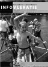

Infovleratie
| De Vleermuis geeft elke twee maand het tijdschriftje 'Infovleratie' uit met informatie over activiteiten, vergaderingen, verslagen, agenda, enz ... Op deze pagina kan je de verschillende Infovleraties downloaden in Adobe Acrobat formaat. Zo blijf je overal en altijd op de hoogte van het reilen en zeilen binnen De Vleermuis. | Download gratis Adobe Acrobat Reader |
Infovleratie januari-april 2004 (pdf niet bewaard) |
|
Infovleratie oktober-december 2003 [download] |
|
 |
Infovleratie augustus 2003 (pdf niet bewaard) |
Infovleratie mei 2003 [download] |
|
Infovleratie april-mei 2003 [download] |
|
Infovleratie januari-maart 2003 [download] |
|
Infovleratie oktober-december 2002 [download] |
|
Infovleratie augustus 2002 [download] |